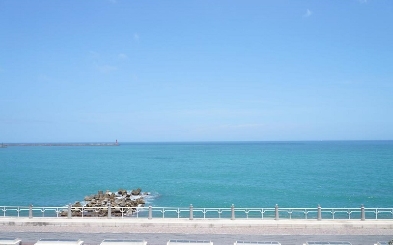
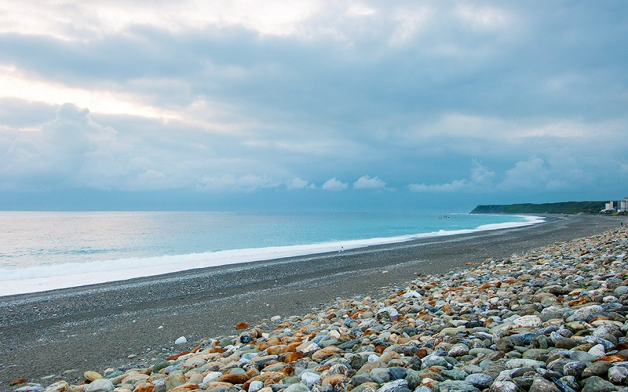
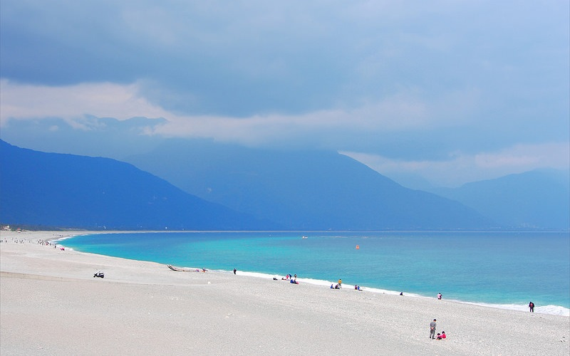

Chihsingtan
Hualien County
Chihsingtan Beach
 Chihsingtan Beach is the only county Scenic Area in Hualien County and faces the Pacific Ocean. The beach is
famous for its half moon-like shape gulf and gravels. Geologically, the Chihsingtan Beach is a steeply descending beach,
which causes the occurance of freak waves. For safety, all water sports and activities are banned in this area. All you can
here is strolling at the beach and enjoy the landscape. The beach is considered to be one of the most dangerous beach
in Taiwan, so all tourists visiting this area should watch out for the waves.
- Best seasons: Summer
- Transportation:
The beach is accessible within walking distance East from Beipu Station of Taiwan Railways Administration.